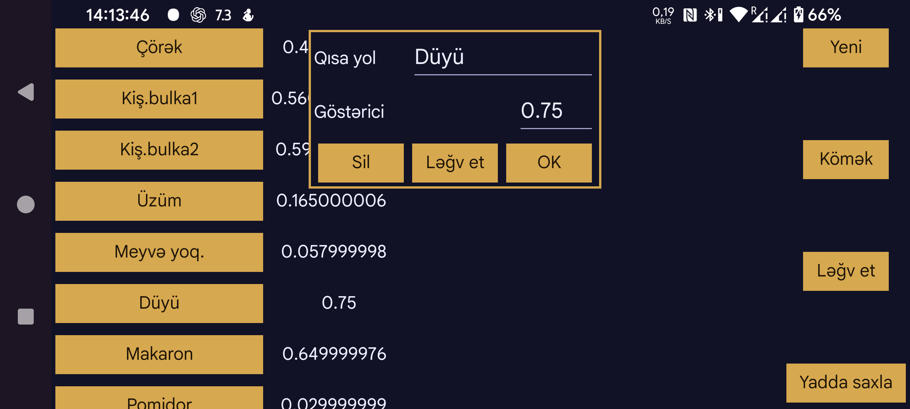

ar az be de es fa fr hi it ja ko nl pl pt ru tr uk uz zh en
Qısayollardan Kerfstok saat tətbiqində istifadə etmək olar.
Saatda ədəd daxil etmə ekranından qısayollar ekranına keçmək mümkündür (məsələn, Vivoactive 3-də sola sürüşdürməklə). Burada etiketlər siyahısı göstərilir. Onlardan birinə toxunduqda uyğun qiymət ədəd daxil etmə ekranına əlavə edilir. Qiymətlər adi ədədlər və ya ədədlərlə birləşdirilmiş hesablama operatorları ola bilər; məsələn, *0.5 daxil edilmiş ədədi 0,5-ə vurur.
Bu tənzimləmələr ekranında qısayollar yarada, silə və dəyişdirə bilərsiniz.
Mövcud qısayollar soldakı siyahıda göstərilir. Birini seçəndə onun etiketini və qiymətini dəyişdirmək və ya qısayolu silmək üçün ekran açılır.
Yeni qısayol yaratmaq üçün Yeni düyməsini basın.
Dəyişikliklər yalnız Yadda saxla düyməsinə basdıqdan sonra saxlanılır.